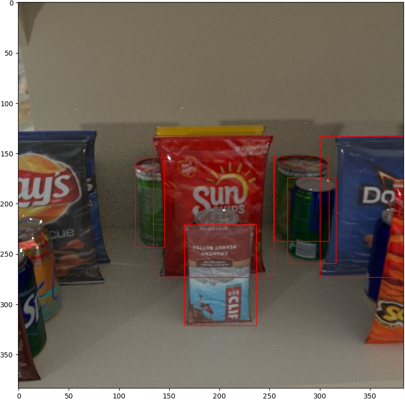

Synthetic Image Data Generation for Object Detection

Obtaining realistic image data with bounding box annotations for particular objects are scarce and hard to find for object detection.
Based on previous research, we learned that we can expand our dataset and improve
model performance. To solve our issue, I developed an automated synthetic image data generator using Python & Blender
that generated 5000 images per day. With each image that was being output being unique, we were able to expand our dataset to train on
specific items that we did not originally have in our dataset. From there we created a pipeline and trained a deep learning model based on
RetinaNet with One-shot learning
in TensorFlow using a mix of real and synthetic data.
Languages: python
Tools:
blender,
jupyter,
numpy,
opencv,
tensorflow
Lane & Vehicle Detection

Object detection is a common application within the field of computer vision and there are many ways of implementing
it. For this project, a support vector machine was trained on thousands of HOG representations of various vehicles and
and a sliding window approach for the bounding box detections.
For lane detection we used a hough transform with a ROI (Region of Interest) in mind along with extrapolation to the
farthest visible lane.
Languages: C++,python
Tools: opencv,jupyter
Financial Market Prediction
Machine learning is increasingly becoming popular within the financial trading markets. We tackled a novel approach
using historical BitCoin data to predict prices and inference price by day. We utilized various financial market indicators
to help with the feature engineering. We built multiple deep learning models such a 1 dimensional convolutional neural network (CNN)
and a LSTM (Long Short Term Memory) neural network. Along with our predicting model, we developed an android application to receive predictions
from the cloud.
Languages: python
Tools:
pytorch,
pandas,
flask,
sklearn,
Kivy